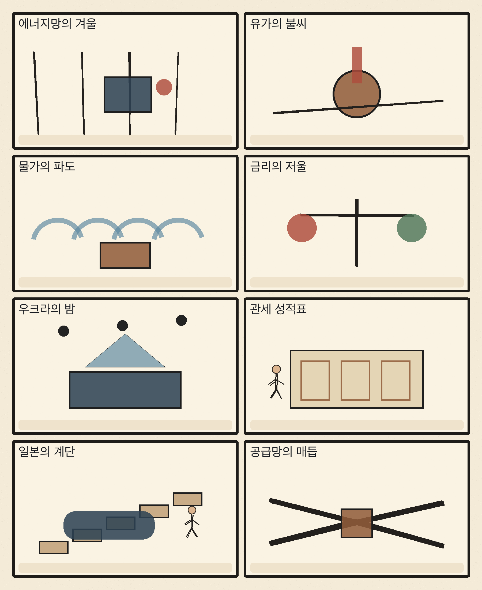
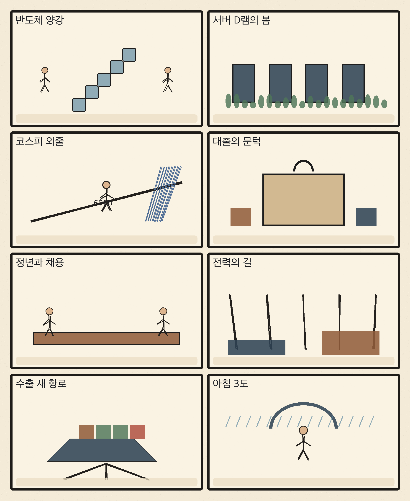

01
오라클 · 140.00→130.55달러 · -6.75%
내용요약 시가 대비 -6.75%로 조사 종목 중 낙폭이 가장 컸습니다. 물가와 금리 부담 속 고평가 인공지능 인프라 종목의 매도가 두드러졌습니다.
예상여파 국내 데이터센터·소프트웨어 관련주에도 밸류에이션 압력이 번질 수 있습니다.
MORNING_BRIEFING_20261015
작성 시각: 2026-10-15 06:33 KST · 직전 미국 정규장과 2026-10-15 KST 당일 공개 기사 기준
직전 미국 정규장인 10월 14일 뉴욕증시는 다우 -0.09%, S&P 500 -1.11%, 나스닥 -1.88%로 마감했습니다. 뜨거운 소비자물가와 고유가가 금리 인하 기대를 낮추며 기술주 매도가 집중됐습니다. 오늘 한국 증시는 전일 6,000선을 가까스로 지킨 KOSPI의 외국인 수급, 원·달러 환율, 반도체 대형주의 시초가 갭을 먼저 확인해야 합니다.
| 지수 | 종가 | 등락률 | 한국 증시 시사점 |
|---|---|---|---|
| 다우존스 | 51,621.48 | -0.09% | 고유가·물가 부담으로 방어주와 실적주의 선별 장세 예상 |
| S&P 500 | 7,718.94 | -1.11% | 고유가·물가 부담으로 방어주와 실적주의 선별 장세 예상 |
| 나스닥 종합 | 26,692.87 | -1.88% | 기술주 위험회피가 국내 반도체·성장주에 직접 부담 |
물가·금리 부담에 미국 기술주가 급락했습니다.
전일 -0.44%, 시가 대비 -0.88%로 6,000선을 지켰습니다.
중동 공급 위험이 물가와 환율 부담을 키웁니다.
HBM4E와 서버 D램 회복 기대는 중기 관찰 요인입니다.
10월 14일 보고서는 국내 급락 뒤 변동성 안정과 수급·컨센서스·보정 표본 문턱을 모두 충족한 종목이 없어 공식 추천을 내지 않았습니다. 게시 당시 판단을 유지하며 사후 종목을 추가하지 않습니다.
| 시장 | 종가 | 등락률 | 기준 |
|---|---|---|---|
| KOSPI | 6,008.81 | -0.44% | 10월 14일 · 시가 대비 -0.88% |
| KOSDAQ | 823.88 | -1.57% | 10월 14일 · 시가 대비 -1.44% |
| 다우존스 | 51,621.48 | -0.09% | 미국 10월 14일 정규장 |
| S&P 500 | 7,718.94 | -1.11% | 미국 10월 14일 정규장 |
| 나스닥 종합 | 26,692.87 | -1.88% | 미국 10월 14일 정규장 |
JP모건이 시가 대비 +2.48%로 방어력을 보였습니다.
월마트 +2.19%로 위험회피 장세에서 상대 강세였습니다.
오라클 -6.75%, 마벨 -6.64%로 낙폭이 컸습니다.
로켓랩 -5.82%, 슈퍼마이크로 -5.77%로 밀렸습니다.
내용요약 시가 대비 -6.75%로 조사 종목 중 낙폭이 가장 컸습니다. 물가와 금리 부담 속 고평가 인공지능 인프라 종목의 매도가 두드러졌습니다.
예상여파 국내 데이터센터·소프트웨어 관련주에도 밸류에이션 압력이 번질 수 있습니다.
내용요약 시가 대비 -6.64%로 전일 급등분을 상당 부분 되돌렸습니다.
예상여파 맞춤형 인공지능 반도체 기대와 별개로 단기 변동성이 커 국내 공급망 추격매수 심리를 누를 수 있습니다.
내용요약 시가 대비 -5.82%로 고변동 성장주 위험회피를 반영했습니다.
예상여파 금리 상승 국면에서는 장기 성장 기대에 의존하는 종목의 할인율 부담이 커질 수 있습니다.
내용요약 시가 대비 +2.48%로 기술주 급락 속 상대 강세를 보였습니다.
예상여파 금리 상승 수혜 기대가 금융주로 이동할 수 있지만 경기 둔화와 신용비용도 함께 봐야 합니다.
내용요약 시가 대비 +2.19%로 필수소비재 방어력이 부각됐습니다.
예상여파 위험회피가 이어지면 현금흐름이 안정적인 소비·방어 업종의 상대 강세가 지속될 수 있습니다.
나스닥 -1.88%와 오라클·마벨의 급락은 국내 반도체·인공지능 인프라의 장전 심리에 부담입니다. 국제유가 상승과 미국 물가 압력은 원·달러 환율과 외국인 수급에도 불리합니다. 다만 KOSPI가 전일 장중 5,944.65에서 6,008.81로 낙폭을 줄였으므로 6,000선 방어와 외국인 현·선물 매도 둔화가 확인되면 제한적 기술 반등은 가능합니다. 시초가 급락만으로 저가매수를 서두르지 않습니다.
오늘은 추천 없음 — 현금 관망
미국 기술주 급락, 고유가·물가 압력과 국내 지수 6거래일 연속 약세가 겹쳤습니다. 06:30 장전 시점에 당일 시가·호가 유동성이 형성되지 않았고 전일까지의 외국인·기관 수급, 컨센서스 변화와 30건 이상 확률 보정 표본을 모두 확보해 종합점수 75점·상승확률 60%·예상 손익비 1.5를 동시에 통과한 종목이 없습니다.
관심 연결종목 HBM4E·서버 D램·원전 전력망·방어주는 관찰 대상일 뿐 매수 추천이 아닙니다. 장전 갭 하락 뒤 반등과 테마성 급등을 추격매수하지 않습니다.
전일 저점 5,944.65와 외국인 현·선물 수급을 확인합니다.
중동 공급 위험이 환율과 수입물가에 미치는 영향을 봅니다.
나스닥 급락 반영 뒤 낙폭 축소와 거래대금 회복을 점검합니다.
큰 일교차와 내륙 서리, 수도권 오후 비에 대비합니다.
핵심 요약: 인공지능 경쟁이 HBM4E·서버 D램에서 데이터센터 전력·냉각과 원전 투자까지 넓어지고 있습니다. 기술 성과는 고객 인증과 전력망 연결, 안정적 운영으로 검증해야 하며 선거를 앞둔 모델 안전장치도 산업 표준의 핵심 축으로 부상했습니다.
내용요약 슈나이더 일렉트릭이 인공지능 팩토리용 전력·냉각·자동화 인프라 청사진을 제시했다는 당일 보도입니다. 가속기 성능뿐 아니라 랙 단위 전력 효율과 운영 안정성이 데이터센터 경쟁의 핵심으로 이동하고 있습니다.
예상여파 전력기기·냉각·에너지관리 수요가 확대될 수 있지만 대규모 설비투자의 회수기간과 전력망 접속 지연을 함께 살펴야 합니다.
내용요약 업계 전문가가 HBM에 이어 일반 서버용 D램도 회복 국면에 진입했다고 진단한 당일 보도입니다. 인공지능 서버와 범용 서버의 메모리 수요가 함께 살아나는지가 관건입니다.
예상여파 메모리 업황의 저변 확대에는 우호적이지만 가격 상승이 고객 재고 조정과 공급 증설로 되돌아오는 시점을 점검해야 합니다.
내용요약 반도체대전에서 차세대 HBM4E 기술이 공개됐다는 당일 보도입니다. 고대역폭·전력효율·패키징 경쟁이 7세대 제품으로 이어지고 있습니다.
예상여파 고객 인증과 수율 안정이 실제 매출 전환의 핵심이며 소재·장비 공급망에는 세대 전환 수요가 생길 수 있습니다.
내용요약 SK가 인공지능 전력 확보를 위해 미국 원전 기업 웨스팅하우스 지분 투자를 검토한다는 보도입니다. 데이터센터 전력 부족이 기술기업의 에너지 투자로 확장되는 흐름입니다.
예상여파 원전·전력망·데이터센터의 결합이 빨라질 수 있으나 거래 구조와 규제, 건설 기간이 길어 단기 실적 기대와 구분해야 합니다.
내용요약 앤트로픽이 2026년 미국 중간선거를 앞두고 인공지능 선거 안전장치를 강화한다는 당일 보도입니다. 생성형 인공지능의 정치 콘텐츠 오용 대응이 본격화되고 있습니다.
예상여파 플랫폼의 출처 표시·접근통제·감사 체계가 강화되며 기업 고객도 모델 거버넌스와 기록 보존 요구에 대비해야 합니다.
핵심 요약: 우크라이나 에너지 시설 공격과 사우디 원유 시설 위험이 에너지 안보를 흔들고 있습니다. 미국 물가 압력과 동맹국 투자·관세 협상, 일본 경제의 구조적 둔화가 세계 공급망과 금리 경로의 변수가 됐습니다.
내용요약 러시아가 우크라이나 전역의 에너지 시설을 겨냥한 공격을 확대했다는 당일 보도입니다. 겨울을 앞둔 전력·난방 인프라의 취약성이 다시 부각됐습니다.
예상여파 유럽의 에너지 안보 비용과 방공 지원 부담이 늘고 전력·가스 가격의 지정학 위험 프리미엄이 커질 수 있습니다.
내용요약 미국 대통령이 한국·대만·일본의 대미 투자 규모를 비교한 성적표를 공개했다는 당일 보도입니다. 동맹국 투자와 통상 협상이 국내 정치 메시지로 활용되는 모습입니다.
예상여파 한국 기업은 투자 약속의 이행 일정, 현지 생산 요건과 관세 협상의 연계를 면밀히 관리해야 합니다.
내용요약 연준 베이지북이 고유가로 미국 전 지역의 물가 압력이 심화되고 공급망 비용이 상승했다고 진단했다는 당일 보도입니다.
예상여파 금리 인하 기대가 약해지고 장기금리·달러가 강해지면 성장주와 신흥국 자금 흐름에 부담이 될 수 있습니다.
내용요약 사우디 아람코 시설 피격과 국제에너지기구의 공급난 경고로 국제유가가 상승했다는 당일 보도입니다.
예상여파 운송·화학·항공의 비용 부담이 커지고 산유국·정유 업종의 상대 강세가 이어질 수 있으며 국내 물가와 환율에도 부담입니다.
내용요약 일본의 국내총생산 순위가 인도에 뒤이어 더 낮아질 수 있다는 전망을 다룬 당일 보도입니다. 인구·생산성·환율의 구조적 압력이 함께 지적됩니다.
예상여파 아시아 성장축 이동이 빨라지며 한국 기업의 인도 시장·공급망 전략 중요성이 더 커질 수 있습니다.

핵심 요약: 차세대 메모리 기술과 서버 D램 회복 기대가 커졌지만 증시는 고유가·환율·외국인 수급의 압박을 받고 있습니다. 대출 규제, 정년연장과 청년 채용, 수출 다변화는 성장과 형평성을 함께 풀어야 할 과제입니다.
내용요약 국내 반도체 양사가 반도체대전에서 차세대 메모리 기술과 사업 전략을 제시했다는 당일 보도입니다. HBM 이후 제품 로드맵과 범용 메모리 회복이 함께 주목받고 있습니다.
예상여파 기술 공개보다 고객 인증·수율·출하가 실적을 좌우하며 최근 주가 변동성이 커 추격매수에는 주의가 필요합니다.
내용요약 대출 규제가 투기 수요를 억제했지만 현금 보유자에게 유리해 상환능력 중심 규제가 필요하다는 당일 분석입니다.
예상여파 주택 거래와 전세 시장의 양극화가 이어질 수 있어 가계부채 건전성과 실수요 접근성을 함께 조정해야 합니다.
내용요약 정년연장 입법 논의가 속도를 내는 가운데 청년 채용과 임금체계 개편이 쟁점이라는 당일 보도입니다.
예상여파 세대 간 고용 대체를 줄이려면 직무·임금체계와 재교육, 신규 채용 유인을 묶은 제도 설계가 필요합니다.
내용요약 대외경제정책연구원이 캐나다를 수출 다변화의 기회로 평가했다는 당일 보도입니다. 특정 시장 의존도를 낮추는 전략이 강조됐습니다.
예상여파 에너지·핵심광물·방산·첨단 제조 협력이 확대될 수 있지만 현지 규정과 조달 조건 대응이 중요합니다.
내용요약 전국 아침 최저기온이 3도까지 떨어지고 수도권·강원 북부에 오후 비가 예상된다는 당일 예보입니다.
예상여파 출근길 보온과 큰 일교차, 내륙 서리 및 농작물 냉해, 늦은 오후 교통 안전에 유의해야 합니다.
